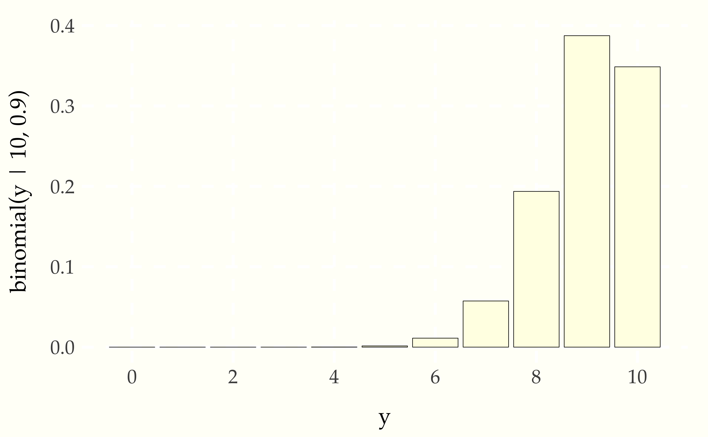
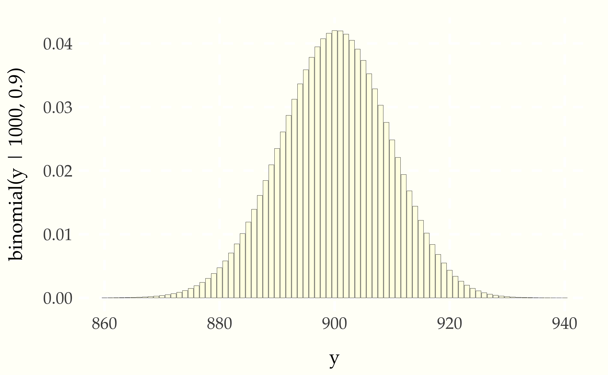

In 1733, Abraham de Moivre noticed that as the number of trials in a binomial distribution grew, the resulting distribution became nearly symmetric and bell-shaped.205 De Moivre, A., 1733. Approximatio ad summam terminorum binomii. With 10 trials and a probability of success of 0.9 in each trial, the distribution is clearly asymmetric (i.e., skewed).
Figure 15.1: Probability of number of successes in \(N = 10\) independent trials, each with a 90 percent chance of success. The result is \(\mbox{binomial}(y \mid 10, 0.9)\) by construction. With only ten trials, the distribution is highly asymmetric, with skew (longer tails) to the left.
But when we increase the number of trials by a factor of 100 to \(N = 1\,000\) without changing the 0.9 probability of success, the result is a nearly symmetric bell shape.
Figure 15.2: Probability of number of successes in \(N = 1000\) independent trials, each with a 90 percent chance of success. The familiar bell-shaped curve arises as \(N\) grows.
de Moivre found that the normal density function (to be developed below), despite coming from a continuous distribution, provided a tight approximation to the binomial probablity mass function as \(N\) becomes large.206 This is because the interval between integers is 1, so that \[\begin{array}{rcl} 1 & = & \int_{-\infty}^{\infty} p(x) \mathrm{d}x \\[2pt] & \approx & \sum_{x = -\infty}^{\infty} p(x). \end{array} \]
In 1809, Carl Friedrich Gauss published his treatise on the motion of planets, in which he derives the normal distribution from the method of least squares.207 Gauss, Carolo Friderico, 1809. Theoria Motus Corporum Coelestium in sectionibus conicis solem ambientium. Sumtibus Frid. Perthes et IH Besser, Hamburgi. English translation: Theory of Motion of the Celestial Bodies Moving in Conic Sections Around the Sun. Gauss was faced with a sequence of noisy measurements \(y_1, \ldots, y_N\) from some distribution and wanted to combine them by taking their average,
\[ \bar{y} = \frac{1}{N} \sum_{n=1}^N y_n. \]
Gauss realized that the average \(\bar{y}\) minimizes the sum of square differences from the observed values,208 The expression \(\mbox{arg min}_y \, f(y)\) returns the value of \(y\) that minimizes \(f(y)\), e.g., \[\mbox{arg min}_y \ (y - 3)^2 = 3\].
\[ \bar{y} = \mbox{arg min}_y \, \sum_{n=1}^N \left( y_n - y \right)^2. \]
Gauss reasoned backward to the normal distribution, reasoning that for the average to be a good estimator, the distribution of the errors \(y_n - y\) must have this same quadratic property. Working on the log scale, Gauss was looking for a distribution whose density functions would have roughly the property that
\[ \log p(y) = -y^2 + \mbox{const.} \]
We have to work on the log scale here in order for the resulting density function to be normalizable.209 Normalizability requires \[ \begin{array}{rcl} \int_{-\infty}^{\infty} p(y) \, \mathrm{d}y & = & \int_{-\infty}^{\infty} \exp(\mbox{const}) \times \exp(-y^2) \, \mathrm{d}y \\[4pt] & = & \exp(\mbox{const}) \times \int_{-\infty}^{\infty} \exp(-y^2) \, \mathrm{d}y \end{array} \] to be finite.
In order for the standard deviation and variance to work out to unity, it is convenient to work with half th squared error. Therefore, the standard normal distribution is defined on the log scale up to an additive constant that doesn’t depend on \(y\) by
\[ \log \mbox{normal}(y) = -\frac{1}{2} y^2 + \mbox{const.} \]
This ensures that if \(Z \sim \mbox{normal}()\), then \(\mathbb{E}[Z] = 0\) and \(\mbox{var}[Z] = \mbox{sd}[Z] = 1\).
Converting back the linear scale gives us the kernel of the normal distribution,
\[ \mbox{normal}(y) \propto \exp \left( -\frac{1}{2} y^2 \right). \]
The kernel of a probabilty function defines it as a function of parameters and variate outcome up to a proportion. Most of the algebra in statistics only requires probability functions up to a proportion, so it’s usually simpler to drop the normalizing constants.210 It’s also faster computationally to drop normalizing constant, which often involve complicated expensive special function evaluation.
Including the normalizing constants, the normal distribution is211 The constant factor is defined by \[ \int_{-\infty}^{\infty} \exp\left( -\frac{1}{2} y^2 \right) \ = \ \sqrt{2 \pi}. \]
\[ \mbox{normal}(y) \ = \ \frac{1}{\sqrt{2 \pi}} \exp \left( -\frac{1}{2} y^2 \right). \]
Now we have a distribution where the value \(y\) that maximizes the density of the independent error terms \(y - y_n\) is the one that minimizes square error,
\[ \begin{array}{rcl} \mbox{arg max}_y \prod_{n=1}^N \mbox{normal}(y - y_n) & = & \mbox{arg max}_y \log \prod_{n=1}^N \mbox{normal}(y - y_n) \\[6pt] & = & \mbox{arg max}_y \sum_{n=1}^N \log \mbox{normal}(y - y_n) \\[6pt] & = & \mbox{arg max}_y \sum_{n=1}^N -\frac{1}{2} \left( y - y_n \right)^2 \\[6pt] & = & \mbox{arg max}_y -\frac{1}{2} \sum_{n=1}^N \left( y - y_n \right)^2 \\[6pt] & = & \mbox{arg min}_y \frac{1}{2} \sum_{n=1}^N \left( y - y_n \right)^2 \\[6pt] & = & \mbox{arg min}_y \sum_{n=1}^N \left( y - y_n \right)^2 \\[6pt] & = & \bar{y}. \end{array} \]
The standard normal distribution has an expectaiton of zero and standard deviation one. We can add a scale parameter \(\sigma > 0\) to multiply the standard deviation and a location parameter \(\mu\) so that if \(Y \sim \mbox{normal}(\mu, \sigma)\), then \(\mathbb{E}[Y] = \mu\) and \(\mbox{sd}[Y] = \sigma\).
Starting with a standard normal variate,
\[ Z \sim \mbox{normal}(), \]
we can scale it by \(\sigma\) and shift by \(\mu\) to get a new variable
\[ Y = \mu + \sigma \times Z, \]
for which
\[ Y \sim \mbox{normal}(\mu, \sigma). \]
Dealing with the required change of variables for the inverse transform212 This inverse transform has its own name, the z-transform, and in general may be written as \[Z = \frac{Y - \mathbb{E}[Y]}{\mbox{sd}[Y]}.\] and used to standardize any random variable \(Y\) with a finite expectation and variance. The resulting variable \(Z\) has \(\mathbb{E}[Z] = 0\) and \(\mbox{sd}[Z] = 1\) by construction.
\[ Z \ = \ \frac{Y - \mu}{\sigma}, \]
lets us derive the general normal density function for location parameter \(\mu\) and scale parameter \(\sigma > 0\) as213 It’s a standard Jacobian calculation for transform \[ Y = f(Z) = \mu + \sigma \times Z, \] \[ Z = f^{-1}(Y) = \frac{Y - \mu}{\sigma}, \] and \[ p_Z(z) = \mbox{normal}(), \] from which the Jacobian calculation gives us \[ \begin{array}{rcl} p_Y(y) & = & \mbox{normal}(f^{-1}(y)) \times \left| \frac{\mathrm{d}}{\mathrm{d}y'} f^{-1}(y') \Big|_{y' = y} \right| \\[8pt] & = & \mbox{normal}\left( \frac{y - \mu}{\sigma} \right) \times \frac{1}{\sigma} \\[8pt] & = & \frac{1}{\sqrt{2\pi}} \, \frac{1}{\sigma} \, \exp \left( \left( \frac{y - \mu}{\sigma} \right)^2 \right). \end{array} \] \[ \mbox{normal}(y \mid \mu, \sigma) \ = \ \frac{1}{\sqrt{2 \pi}} \, \frac{1}{\sigma} \, \exp \! \left( -\frac{1}{2} \left( \frac{y - \mu}{\sigma} \right)^2 \right). \]
Presented this way, the formula makes clear that the normal density function is a product of three factors,
Laplace proved the central limit theorem in 1812, which established the sense in which the normal distribution is normal. The theorem tells us that if we take a sequence of independent, finite expectation, finite variance random variables and add them, the sum approaches a normal distribution. It goes even further and tells us which normal distribution, based on the expectations and variances. Let’s state it mathematically as a proper theorem.
Central Limit Theorem (Laplace 1812). Suppose
\[ Y = Y_1, Y_2, \ldots, Y_N \]
is a sequence of independent, identically distributed random variables with
\[ \mathbb{E}[Y_n] = \mu \]
and
\[ \mbox{sd}[Y_n] = \sigma. \]
Define the average of \(Y\) as a new random variable
\[ Z = \frac{1}{N} \sum_{n=1}^N Y_n. \]
As \(N \rightarrow \infty\), the average has a normal distribution with the same location as the \(Y_n\) and a scale reduced by a factor of \(\sqrt{\frac{1}{\sqrt{N}}}\).
\[ \textstyle p_Z(z) \rightarrow \mbox{normal}\left( z \ \Bigg| \ \mu, \, \frac{1}{\sqrt{N}} \times \sigma \right). \]
The theorem can be generalized to variables that do not have the same distribution as long as they are independent and have finite expectations and variances.
Many natural phenomena, such as adult human height in either sex, are the result of a number of relatively small, additive effects, the combination of which leads to normality no matter how the additive effects are distributed. Practically speaking, this is why the normal distribution makes sense as a representation of many natural phenomena.
The normal distribution \(\mbox{normal}(\mu, \sigma)\) is the distribution with the maximum entropy among all distributions with expectation \(\mu\) and standard deviation \(\sigma\).
The entropy of a random variable \(Y\) is defined to be its expected log density,
\[ \mathrm{H}[Y] \ = \ \mathbb{E}\!\left[ \log p_Y(Y) \right]. \]
For a continuous distribution, this unfolds into the integral
\[ \mathrm{H}[Y] \ = \ \int_{-\infty}^{\infty} \log p_Y(y) \times p_Y(y) \, \mathrm{d}y. \]
Because it is a simple expectation, we can compute entropy using simulations \(y^{(1)}, \ldots, y^{(M)}\) from \(p_Y(y)\) as
\[ \mathrm{H}[Y] \approx \frac{1}{M} \, \sum_{m=1}^M \log p_Y\left( y^{(m)} \right). \]
The normal distribution arises naturally as the the distribution of a random variable resulting from a sum of effects. What if effects are multiplicative rather than additive, so that it is the product,
\[ Y = V_1 \times \cdots \times V_N \]
of positive effects \(V_n > 0\). Because the effects \(V_n\) are positive, we can work on the log scale, where
\[ \log Y = \log V_1 + \cdots \log V_N. \]
In this case, \(\log Y\) should have a roughly normal distribution, being the sum of \(N\) additive terms. If \(\log Y \sim \mbox{normal}(\mu, \sigma)\), then \(Y\) has what is called a lognormal distribution. The lognormal density function can be calculated by accounting for the change of variables,214 To calculate the Jacobian for the change of variables, note that if \(Z \sim \mbox{normal}(\mu, \sigma)\) and \(Y = \exp(Z)\), then \[ \begin{array}{rcl} p_Y(y \mid \mu, \sigma) & = & p_Z(\exp^{-1}(y) \mid \mu, \sigma) \times \left| \frac{\mathrm{d}}{\mathrm{d}y'} \exp^{-1}(y') \Bigg|_{y' = y} \right| \\[6pt] & = & \mbox{normal}(\log y \mid \mu, \sigma) \times \left| \frac{\mathrm{d}}{\mathrm{d}y'} \log y' \Bigg|_{y' = y} \right| \\[6pt] & = & \mbox{normal}(\log y \mid \mu, \sigma) \times \frac{1}{y}. \end{array} \] so that
\[ \begin{array}{rcl} \displaystyle p_Y(y \mid \mu, \sigma) & = & \displaystyle \mbox{lognormal}(y \mid \mu, \sigma) \\[6pt] & = & \displaystyle \frac{1}{y} \times \mbox{normal}(\log y \mid \mu, \sigma) \\[4pt] & = & \displaystyle \frac{1}{y} \, \frac{1}{\sqrt{2\pi}} \, \frac{1}{\sigma} \, \exp \left( - \frac{1}{2} \left( \frac{\log y - \mu}{\sigma} \right)^2 \right). \end{array} \]
To see the heart of what’s going on without the location and scale complicating matters, the kernel of the lognormal distribution derived from the standard normal is just
\[ \mbox{lognormal}(y \mid 0, 1) \ \propto \ \frac{1}{y} \, \exp \left( -\frac{1}{2} \left( \log y \right)^2 \right). \]
To simulate values of a normally distributed random variable
\[ Y \sim \mbox{normal}(\mu, \sigma), \]
it suffices to simulate a standard normal variate
\[ Z \sim \mbox{normal}(0, 1) \]
and let
\[ Y = \mu + \sigma \times Z. \]
The simplest way to approximately generate from the normal distribution is to invoke the central limit theorem and generate enough draws from a uniform distribution that the result is roughly normal. This relies on simulation, so it is neither accurate nor fast.215 It does correspond to Francis Galton’s quincunx, a physical machine into which marbles are dropped to fall onto a grid of pegs which push them randomly to the right or the left. This random walk produces distances after a number of steps that are roughly normally distributed. The approximate improves as the number of random moves is increased.
A clever and efficient way to generate standard normal variates relies on solving a seemingly harder problem, generating two independent standard normal variates. By working with two independent normal variates \((X, Y)\), we can work in polar coordinates and generate an angle and radius \((\Theta, R)\), where
\[ X = R \times \cos \Theta \]
and
\[ Y = R \times \sin \Theta. \]
The other way around,
\[ R = \sqrt{X^2 + Y^2} \]
and
\[ \Theta = \arctan \left( \frac{Y}{X} \right). \]
Our strategy is to generate the polar coordinates \((\Theta, R)\) and transform them to \((X, Y)\) with independent standard normal distributions. We can generate a random angle uniformly in radians with
\[ \Theta \sim \mbox{uniform}(0, 2\pi). \]
The tricky part is generating the radius, which we will do by simulating a uniform variate
\[ U \sim \mbox{uniform}(0, 1) \]
and transforming it into
\[ R = \sqrt{-2 \log U}. \]
This relies on a distribution and properties of sums of squared uniform variables we have not yet introduced.216 The technique hinges on the fact that \[X^2 + Y^2 \sim \mbox{chi\_squared(2)}\] and if \[V \sim \mbox{uniform}(0, 1),\] then \[-2 \log V \sim \mbox{chi\_squared}(2),\] so that for our normal variates, \[R = \sqrt{-2 \log V}\].